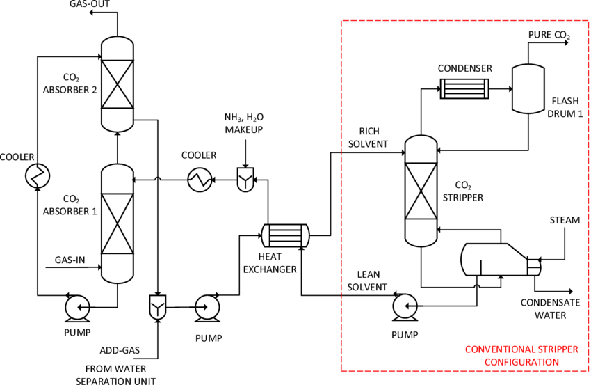

Pilot: SSCC (NH₃ & CCU)
Decentralizovaná syntéza NH₃, pilot 2 kW → 1,5 kg/den, cÃl účinnosti >80 %.
Decentralizovaná syntéza zeleného amoniaku s využitÃm zachytávánà COâ‚‚. Pilotnà jednotka 2 kW → 1,5 kg NH₃/den, účinnost > 80 %.
Vyvinout Å¡kálovatelný modul pro výrobu amoniaku z obnovitelných zdrojů, vhodný pro lokálnà energetické systémy v EU.
Decentralizovaná syntéza NH₃, pilot 2 kW → 1,5 kg/den, cÃl účinnosti >80 %.
Krátké pÅ™edstavenÃ. Brzy vÃce.